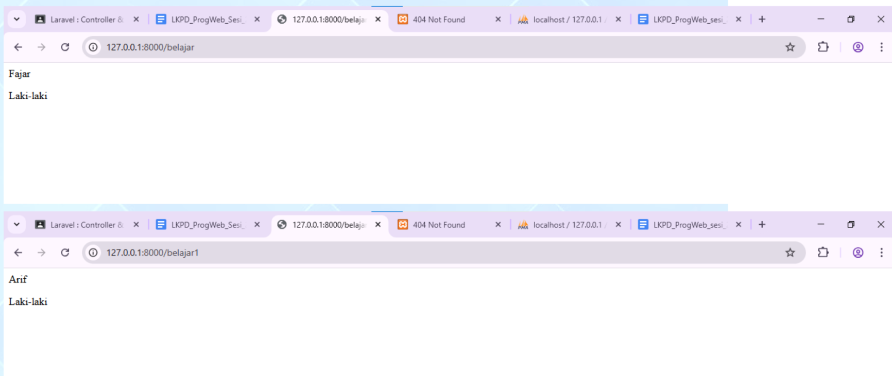
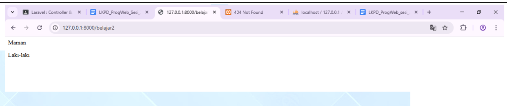
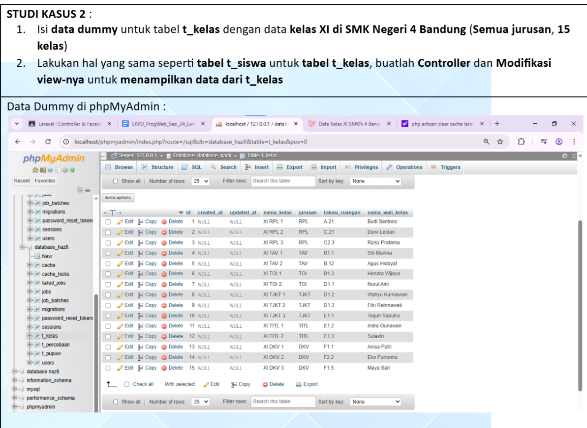
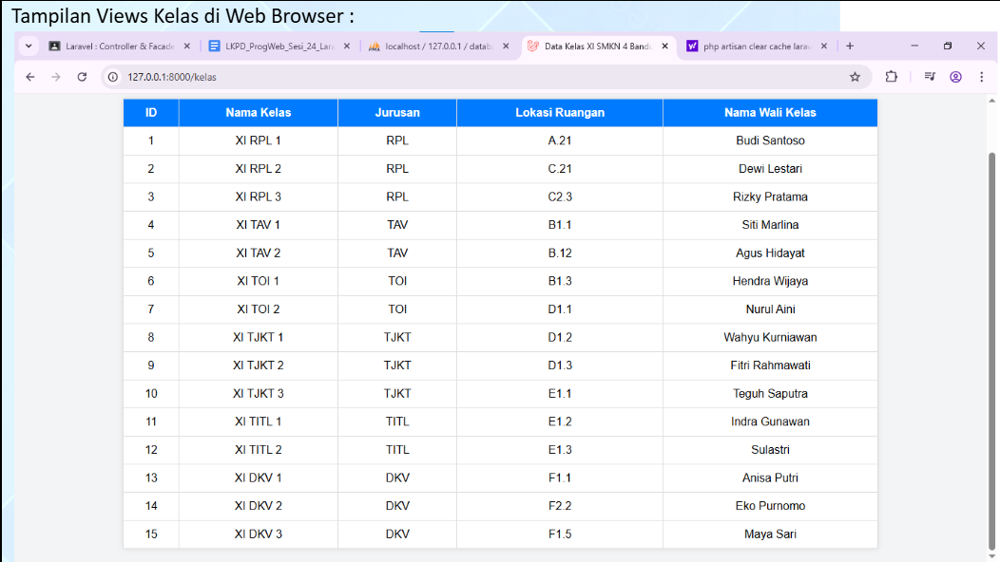
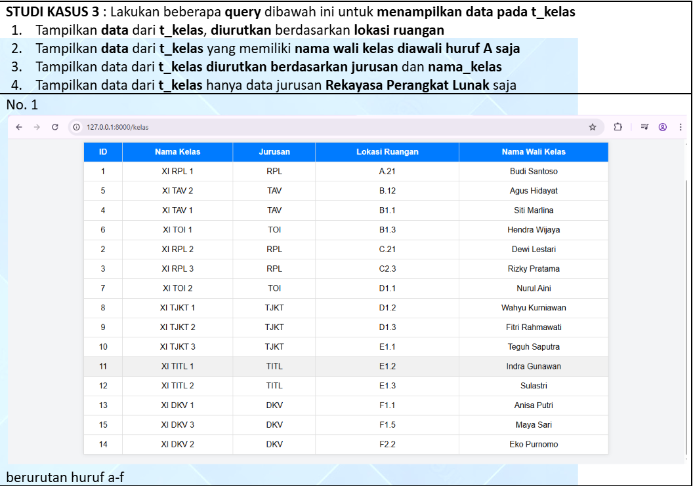
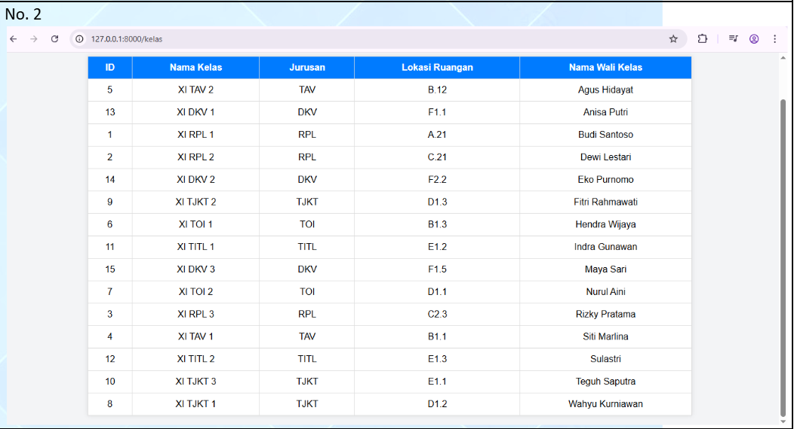
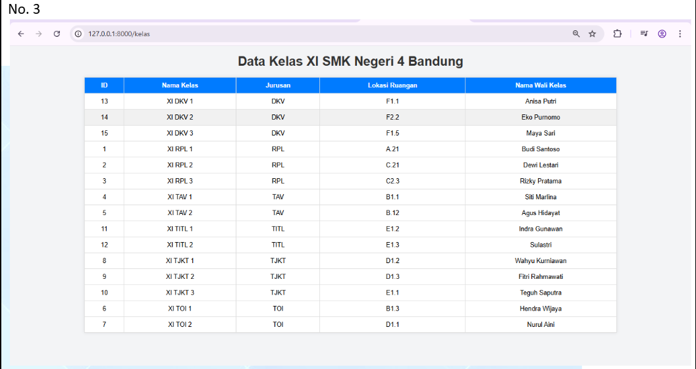
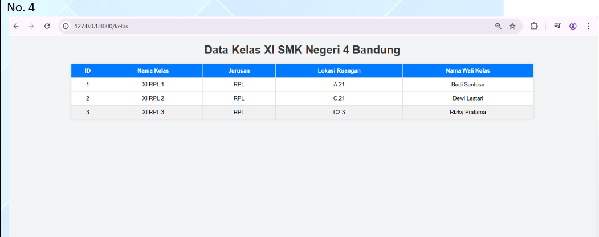

Controller pada Laravel
Pada materi ini, saya mulai mempelajari bagaimana route yang sebelumnya ditulis langsung dapat dipindahkan ke dalam controller. Dengan cara ini, kode menjadi lebih rapi karena logika dipisahkan dari file route.
Studi Kasus 1
Pindahkan 3 route yang sebelumnya anda buat di routes ke SiswaController
Pada studi kasus pertama, saya diminta memindahkan tiga route yang sebelumnya dibuat di file route ke dalam SiswaController. Dari latihan ini saya belajar bahwa controller membantu mengatur fungsi-fungsi agar lebih terstruktur dan mudah dibaca.
Source code SiswaController
<?php
namespace App\Http\Controllers;
use Illuminate\Http\Request;
class SiswaController extends Controller
{
function index() {
$nama = "Fajar";
$jk = "Laki-laki";
return view('belajar', compact('nama', 'jk'));
}
function index1() {
$nama = "Arif";
$jk = "Laki-laki";
return view('belajar', compact('nama', 'jk'));
}
function index2() {
$nama = "Maman";
$jk = "Laki-laki";
return view('belajar', compact('nama', 'jk'));
}
}

Dari studi kasus ini, saya memahami bahwa controller membuat penulisan project Laravel menjadi lebih rapi karena setiap fungsi dapat ditempatkan dalam class tersendiri.
Studi Kasus 2
Isi data dummy untuk tabel t_kelas dan tampilkan data dari t_kelas menggunakan controller dan view
Pada studi kasus kedua, saya diminta mengisi data dummy pada tabel t_kelas, lalu membuat controller dan memodifikasi view agar data dari tabel tersebut bisa ditampilkan di browser. Dari latihan ini saya mulai memahami penggunaan Facade DB untuk mengambil data langsung dari database.

Source code KelasController
<?php
namespace App\Http\Controllers;
use Illuminate\Http\Request;
use Illuminate\Support\Facades\DB;
class KelasController extends Controller
{
// Fungsi untuk menampilkan semua data kelas
public function index()
{
// Ambil semua data dari tabel t_kelas
$data_kelas = DB::table('t_kelas')->get();
// Kirim data ke view
return view('kelas.index', ['data_kelas' => $data_kelas]);
}
}Source code View Kelas
<!DOCTYPE html>
<html>
<head>
<title>Data Kelas XI SMKN 4 Bandung</title>
<style>
body {
font-family: Arial, sans-serif;
background: #f3f4f6;
margin: 20px;
}
h1 {
text-align: center;
color: #333;
}
table {
margin: auto;
border-collapse: collapse;
width: 80%;
background: white;
box-shadow: 0 0 8px rgba(0,0,0,0.1);
}
th, td {
border: 1px solid #ddd;
padding: 10px;
text-align: center;
}
th {
background-color: #007bff;
color: white;
}
tr:hover {
background-color: #f1f1f1;
}
</style>
</head>
<body>
<h1>Data Kelas XI SMKN 4 Bandung</h1>
<table>
<thead>
<tr>
<th>ID</th>
<th>Nama Kelas</th>
<th>Jurusan</th>
<th>Lokasi Ruangan</th>
<th>Nama Wali Kelas</th>
</tr>
</thead>
<tbody>
@foreach ($data_kelas as $kelas)
<tr>
<td>{{ $kelas->id }}</td>
<td>{{ $kelas->nama_kelas }}</td>
<td>{{ $kelas->jurusan }}</td>
<td>{{ $kelas->lokasi_ruangan }}</td>
<td>{{ $kelas->nama_wali_kelas }}</td>
</tr>
@endforeach
</tbody>
</table>
</body>
</html>
Dari studi kasus ini, saya memahami bahwa Facade DB dapat digunakan untuk mengambil data dari tabel database, lalu controller mengirimkannya ke view agar dapat ditampilkan dengan bentuk yang lebih rapi di halaman web.
Studi Kasus 3
Lakukan beberapa query di bawah ini untuk menampilkan data pada t_kelas
Pada studi kasus ketiga, saya diminta menjalankan beberapa query untuk menampilkan data dari tabel t_kelas dengan kondisi yang berbeda-beda. Pada bagian ini saya mengikuti urutan hasil seperti yang ada pada screenshot tugas.




Dari studi kasus ini, saya memahami bahwa query pada Laravel dapat dipakai untuk mengurutkan, memfilter, dan menampilkan data sesuai kebutuhan yang berbeda-beda.